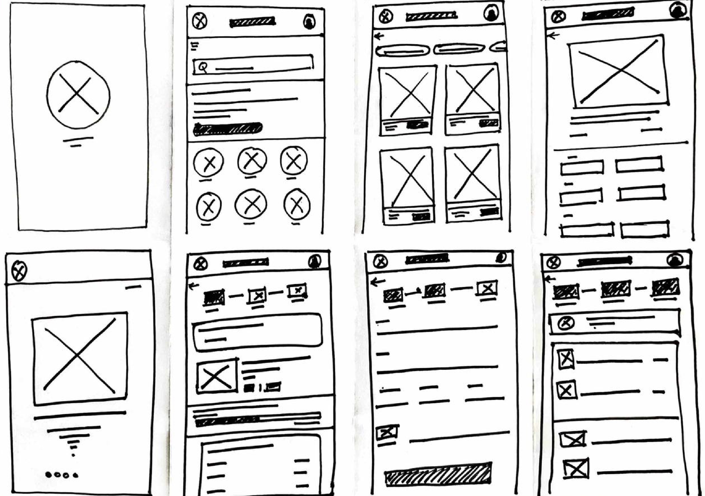

LITTLE ONES NUTRITIOUS APP
A UI/UX Case study
APP FOR
SOCIAL GOOD
a tool to help kids learn
about nutrition

PROJECT OVERVIEW
Product
Problem
Goal
Little Ones: An engaging, educational platform for kids, promoting nutrition awareness. Accessible as both a mobile app and responsive website for a holistic learning experience.
Little Ones combines an app and website to successfully encourage good eating habits, addressing the absence of interesting and instructive options for children to learn about nutrition.
With "Little Ones," I wanted to provide kids a fun, approachable platform that would help them better understand nutrition and make better decisions for their long-term wellbeing.
DESIGN PROCESS
Research Summary
Comprehensive user research was crucial in the creation of "Little Ones." To fully comprehend the distinct demands, tastes, and behaviours of our youthful audience, we set out
on a long trip. We learned a great deal about the nutritional knowledge gaps of parents, carers, and kids, as well as about
their openness to using digital learning tools, through surveys,
interviews, and observation sessions with them. We found that while parents looked for a reliable resource to teach their kids about healthy eating, youngsters yearned for engaging and aesthetically pleasing information. With this user-centered information at our disposal, we created an app and website that appealed to kids' enjoyment of fun experiences while simultaneously providing parents with a solid platform to encourage their kids' nutritional literacy. 'Little Ones' will continue to be a useful and successful tool for the field of educating children about nutrition as a result of the continual changes that our user research informs.
PERSONA
Problem Statement :
Roshni, a mother of two, requests nutrition advice. She first talks
to her paediatrician, who suggests she find a local nutritionist.
IDEATE & DESIGN
I did a quick ideation exercise to come up with ideas for how to address gaps identified in the competitive audit.
My focus was specifically on Provide as many best Kids Care Kit for mothers as possible.

Lo-fi Wireframes

Hi-fi Wireframes
USER FLOW

TESTING
Usability Study
I conducted one rounds of usability studies. Findings from the first study helped guide the designs from wireframes to mockups.
The second study used a high-fidelity prototype and revealed what aspects of the mockups needed refining.
Users want easy access to Doctors and nutritious products.
User want Products Description according to Kids age.
Users preferred clear indications of when food items would expire.
Accessibility considerations
Add Cart for adding or storing products.
Clear labels for interactive elements that can be read by screen readers.
Initial focus of the home screen on personalized
recommendations help define the primary
task or action for the user.
PROTOTYPE
The high-fidelity prototype
followed the same user
flow as the low-fidelity
prototype, cluding
design changes
made after the
usability study
DESIGN ELEMENTS
Typography
Color
Inter
ABCDEFGHIJKLMNOPQRSTUVWXYZ
abcdefghijklmnopqrstuvwzyx
1234567890
#19695B
#CCCE43
#70CE43
#38AB01
TAKEAWAY
Impact
What I Learned ?
"Little Ones" may have a big influence by encouraging kids to learn about nutrition. Early instillation of good eating practises can lower the likelihood of childhood obesity and related health problems. Parents will acquire useful tools for improving meal preparation, which will benefit their children's long-term wellbeing.
As a consequence, the product has the potential to help create a generation that is healthier and happier and that starts practising good eating at a young age.
I learned that even though the problem I
was trying to solve was a big one, diligently going through each step of the design process and aligning with specific user needs helped me come up with solutions that were both feasible and useful.
RESPONSIVE DESIGN